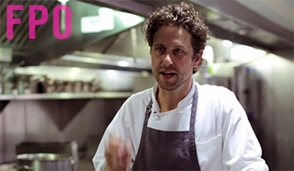

#tgif Great day for an Italian lunch. Two hours long and includes some vino. Reminder, we don't close on Fridays open from 11:30 till close. pic.twitter.com/IAnhVJ4a - (1 day ago)
menu
Pick one of our favorite classics or build your own, starting with house-made hand-streched dough or an arugula base and then top with exceptional ingredients.
neapolitan classics
Pizza known for being topped with just the right amount of each ingredient, with a base of only tomato sauce, only mozzarella, or both.
These flavorful pizzas are the topping combinations that are familiar to most, on a base of both tomato sauce and mozzarella.
cheese
tomato sauce / mozzarella
pepperoni
tomato sauce / mozzarella / pepperoni sausage
veggie
tomato sauce / mozzarella / mushroom / red onion / tomato / green pepper / olive
supreme
tomato sauce / pepperoni / sausage / mushroom / red onion / green pepper
create your own
choose your base
red
tomatoes / mozzarella
white
mozzarella
arugala
salad
choose your toppings
cherry tomatoes
mushrooms
onions
red onions
olives
peppers
green peppers
arugula
artichokes
corn
roasted vegetables
basil
rapini
mozzarella
gorgonzola
parmigiano reggiano
prosciutto cotto
prosciutto di parma
pork sausage
pancetta
brown anchovies
tuna
pepperoni
pork meatballs
drinks
wine
tap barbera
tap pinot grigio
soda fountain
iced tea
beer
coors
coors light
peroni
new belgium blue paddle
oscar blues dale’s pale ale
steelhead extra
bottled drinks
san pellegrino soda
milk
lemonade
apple juice
eldorado water
inspiration
about
The original Pizzeria Locale opened in Boulder in 2011.
It was the result of founders Lachlan Mackinnon-Patterson and Bobby Stuckey’s culinary travels throughout Italy and years of fine dining experience. Now, they're opening a second Pizzeria Locale with a simplified menu and a revolutionary oven, cooking pizzas to a blistered perfection in under two minutes.
lachlan mackinnon-patterson
Lachlan has followed his passion for cooking from his start in Missouri to some of the best restaurants in Europe – eventually landing at the French Laundry in Napa Valley. He joined Bobby in Boulder in 2003 to pursue their vision of opening Frasca, a neighborhood restaurant reminiscent of the frascas they had visited in Italy. Continuing to explore these Italian traditions and cuisine, they opened Pizzeria Locale in 2011.

bobby stuckey
Bobby began his career in Arizona, moving to Aspen in 1995 to join the staff of The Little Nell as sommelier. Five years later he joined world-renowned chef Thomas Keller at The French Laundry. There he received The James Beard Foundation's "Outstanding Wine Service" Award and San Francisco Magazine’s recognition as "Wine Director of the Year".